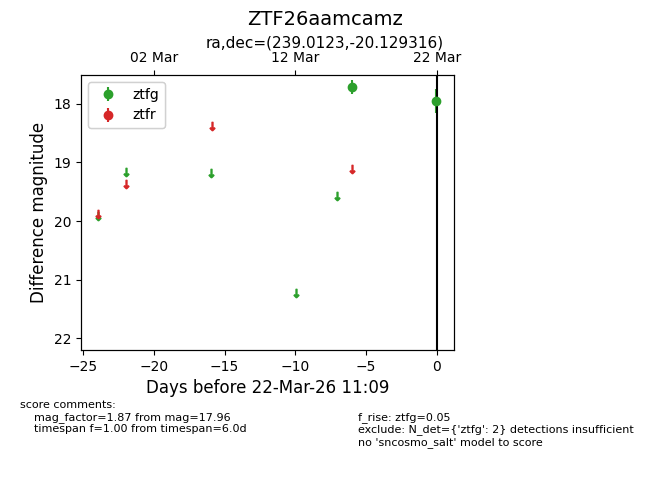
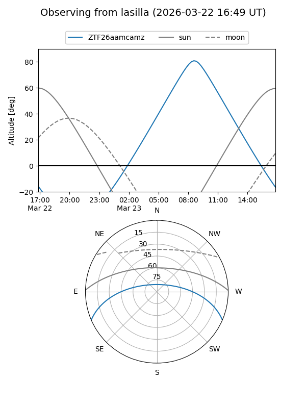
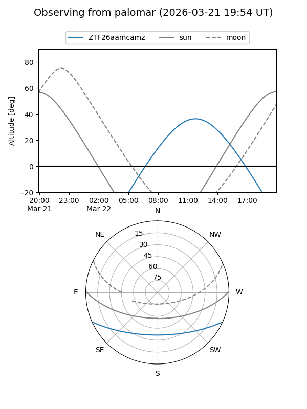

ZTF26aamcamz
Target ZTF26aamcamz at 2026-03-22 11:11
Aliases and brokers:
FINK: link
Lasair: link
ALeRCE: link
alt names
ZTF26aamcamz (ztf,fink_ztf)
Coordinates:
equatorial (ra, dec) = 239.0123,-20.12932
equatorial (HMS+DMS) = 15:56:02.96,-20:07:45.54
galactic (l, b) = (351.2530,+24.95755)
Flags:
Photometry:
last ztfg=17.96
2 ztfg detections
Lightcurve

Visibility


Additional plots